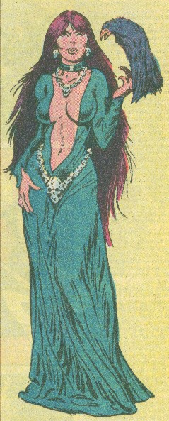
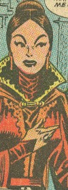
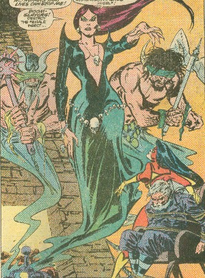
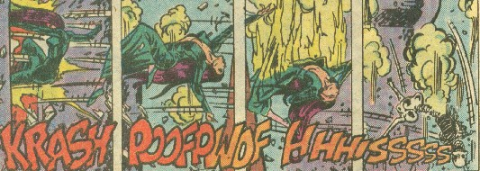
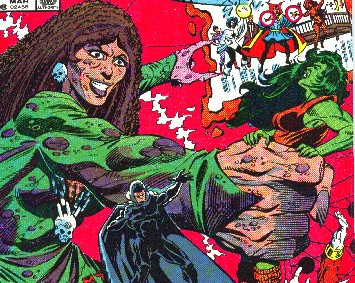
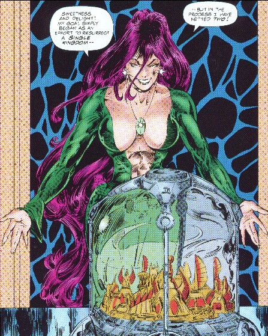
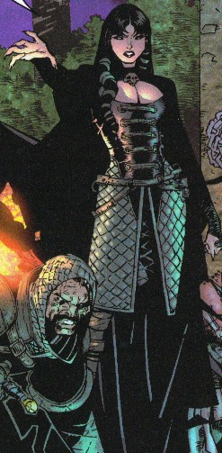

MORGAN LE FAY
Real Name: Morgan (or Morgana) Le Fay
Identity/Class: Human/faerie hybrid, magic user; citizen of Sixth
Century Britain
Occupation: Sorceress, would-be World Conqueror, former High
Priestess, former Queen
Group Membership: Former leader of a Sixth Century Cult of Darkholders,
as well as a modern era incarnation;
Uncertain connection to the Faeries of the Celtic Pantheon
Affiliations: Accolon, Accolon the Hawk,
Azriel (angel of death),
Balor, Binah, Blood Wraith,
Chthon,
Dragon of the Moon?, Dreadknight,
Ea,
Excaliber,
Fomor,
Gaea, Guziel Prziel, Hawkes, Hellhorse,
Isis, Levenah of
the Tides, Metatron,
Mordred the Evil,
Morgan's Knight, Mrgioial,
possibly the Nether Gods (Mandrac,
Necromon,
possibly Gog, Maegog, Nightshade, Wolfsbane),
Nimue/Vivienne, Priest
of the Moon, Selene of the Moon, Shaddai el Chai, Skd Huzi, Totrisi,
Sir Tristan, Trolls of
Rock, Vhdrziolo,
Wrecking Crew, unnamed Gypsies;
loose affiliation to a number of Asgard-related creatures (see summary of
Avengers III#1);
formerly Dr. Doom, Inhumans Genetics Council,
Lancelot,
Magnus,
King Mark,
Merlin, Dr. Vivian Morgan,
Alisander le Orphelin,
the
Queen's
Vengeance,
Lissa Russell, Triton;
possibly formerly the Sisters of Glastonbury Tor and the
Lady of
the Lake
(Niamh)
Enemies: Aliya of Earth-Aliya,
Atlanteans (Homo mermani), Avengers, Victoria Bentley,
Black Knight
(Sir Percy), Black Knight (Dane Whitman), Cable, Captain Britain (Brian Braddock),
Captain Britain (Kelsey Leigh),
Chthon,
Dr. Strange, Fantastic Force, Fantastic Four, Jerry Hunt, Inhumans Genetic
Council, Inhumans Royal Family, David Ishima, Knights of the Round Table, Magnus,
Sir Malgrin,
Meggan,
Merlin,
Lindsay McCabe,
King Arthur
Pendragon,
Breuse Sans Pitie,
Nathaniel Richards,
Jack Russell (Werewolf), Shroud, Spider-Woman (Jessica Drew), Storm, Valinor, Valkyrie,
Kristoff Vernard;
formerly Sean Dolan
Marital Status: Widowed
Known Relatives: Gorlois, Duke of Tintagil (apparent father, deceased;
see comments), Igraine, Duchess of Tintagil (mother, deceased), Uther Pendragon
(step-father, deceased);
Uriens (husband,
deceased), Sir Ewain (son, deceased);
Morgause, Elaine (sisters, deceased), Arthur
Pendragon (half-brother), Anna (half-sister, deceased);
Mordred (nephew), Gawain,
Agravaine, Gaheris, Gareth, Galeshin, (nephews, deceased);
Lot, Nentres (brothers-in-law, deceased), Genevieve
(sister-in-law, deceased);
Ider
(grandson, deceased);
Amlawdd (maternal grandfather, deceased), Gwendolyn (maternal
grandmother, deceased)
The incest-factor makes the relationship exceedingly difficult, and you
can certainly find more relatives on the internet. See comments for discussion
on the legendary sons and daughters of Arthur.
Note: Certain texts erroneously portray Mordred as Morgan's husband
or son
Aliases: Morgana, Morgana Le Fay, Morgaine Le Fay, the Sea Priestess
Place of Birth: Tintagil Castle, Gorre (Now part of modern Cornwall,
England)
Base of Operations:
formerly
formerly the risen island of Atlantis;
formerly
she may or may not have access to Avalon and/or Otherworld
(Avalon existing as a realm within Otherworld)
First Appearance: Uncertain
(Atlas Comics): Black Knight Comics#1 (May, 1955)
(Marvel): Spider Woman I#2 (May, 1978)
Powers/Abilities: Morgan Le Fay is one of the most powerful sorceresses
in the history of Earth. Her magical powers are derived from three major
sources. Due to her faerie heritage she possesses innate personal powers such as
the ability to control minds; she also possesses abilities all humans
potentially have, such as the ability to engage in astral projection. She also
has the faerie ability to manipulate mystical energy, often through spells and
enchantments of ancient Celtic origin, an ability she has honed through
practice. Finally, she has abilities as a high priestess of the Earth goddess
(Gaea) by invoking her Celtic name, Danu.
Not all of Morgan’s powers have been
documented as yet. It is known that she can mystically manipulate both the
natural environment of Earth and the environment of the astral plane in which
she once existed. She can cast illusions, project mystical bolts (which can
affect physical beings and objects even when she is in astral form), create
mystical force shields and remove spirits from their bodies and place those
spirits under her control. When in physical form, she can fly and change her
shape into other people or animals (both real and mythical). She also has
healing powers which she might have used on her former foe King Arthur on
transporting him to Otherworld.
Morgan can also tap into and manipulate powerful magical energies for powerful feats of magic without having to tax upon her normal magical abilities, such as when she used the power of the Norn Stones and the Twilight Sword to restructure reality. There may be an upper limit to how much energy Morgan can control as when she tapped into these energies she did so through the Scarlet Witch.
Morgan has the faerie vulnerability to “cold iron” or steel. These can cause her harm in both her physical and astral forms. Beyond that, however, Morgan is virtually immortal. Her soul survived the physical death of her body, and she has even re-formed from the destruction of her astral form.
In addition, she has also utilized objects of magical power, such as the Darkhold, Ebony Blade, the Evil Eye, Excalibur, the Norn Stones, and the Twilight Sword. She has also created a false Excalibur and the Wicker Man.
(Arthurian Legend) - Morgan’s Drinking
Horn was enchanted that only women faithful to their husbands could use it. If
any woman drinking from it had been unfaithful, the horn would force itself to
spill. While Morgan herself could not use it, she tried to use it to expose the
infidelity between Genevieve and Lancelot, but a messenger took it to King Mark
of
Morgan also owned a rich mantle
set with precious stones, which she had given to Arthur as a peace offering between
them. However, Nimue (presumably
Niamh/Lady
of the Lake) warned Arthur from wearing it
unless Morgan’s damsel messenger tried it on first. Arthur had the
messenger wear it and the young woman was incinerated into coals.
Morgan also possessed objects with
mystical properties. She had an ointment that could heal any wound and even cure
madness. She had a powder that induced temporary amnesiac conditions in her
foes and opened them to her powers of suggestion. Greater doses induced
madness; Lancelot, affected by it, stayed Morgan’s guest in accordance to
his own will and painted his life story on the walls of his own room within her
castle.
Morgan also had a shield lacking
in mystical properties. Emblazoned in gold with the image of a knight with his
feet upon the heads of a king and queen, she lent Tristan this sword at a
tournament at the Castle of the Old Rock.
Height: 6’2”
Weight: 140 lbs.
Eyes: Green
Hair: Magenta
History:
(Official Handbook of the Marvel Universe Deluxe Edition#9: Morgan le Fay (fb))
- Morgan le Fay is half-human and half-faerie (hence her name “Le Fay”).
The faerie are an ancient race of humanoid beings with supernatural powers that
originated from an other-dimensional world that borders upon Britain and
Ireland on Earth. They are closely related to the Dark Elves of Svartleheim,
one of the Nine Worlds of Asgardian Cosmology). Morgan Le Fay is said to be the
daughter of Gorlois, Duke of Tintagil and of his wife, Igraine, who also
bore King Uther Pendragon the son who became the legendary King of Camelot.
However, Morgan’s faerie nature indicates at least one of her parents
must have been at least part faerie (see comments).
(Arthurian Legend/Official Handbook of the Marvel Universe Deluxe Edition#8: Merlin (fb)) - Uther Pendragon, King of Britain, warred for many years against Gorlois and became greatly attracted to the duke's beautiful wife Igraine. Merlin, knowing that a great ruler was destined to be the son of Uther and Igraine, agreed to unite Uther with her in return for the care of their firstborn child. Merlin used his magics to give Uther the appearance of Gorlois, and in this form Uther went to Tintagel and made love to Igraine. Earlier that night, before Uther came to Igraine, the real Gorlois was killed in battle. Soon Uther married Igraine, who gave birth to Arthur.
(Arthurian Legend) - Morgan and her sisters were schooled in a nunnery after the death of her father.
(Official Handbook of the Marvel Universe Deluxe Edition#9: Morgan le Fay (fb)) - She learned the arts of sorcery from the greatest sorcerer of the Sixth Century, Merlin. But although Morgan had persuaded Merlin to teach her magic by promising to be his lover in return, she did not keep her pledge. Morgan mastered the sorcery from the ancient Celtic religion.
(OHotMU I#8: Merlin (fb) / Arthurian Legend) - Morgan's sister Morgause had an affair with King Arthur, resulting in the bastard son Mordred.
(Arthurian Legend)
- During the early part of Arthur's reign Morgan was plotting
her half-brother's demise. Morgan went to great lengths to end Arthur's reign,
her plots ranging from creating a False Excalibur to stirring up jealousy
between the King and Lancelot.
(Official Handbook of the Marvel Universe Deluxe Edition#9: Morgan le Fay (fb)) - Morgan became queen by marrying King Uriens of Gorre, a section of Ancient Britain following the departure of the Romans. They had a son, Sir Ewain, but she actually kept several lovers behind her husband’s back.
(Arthurian Legend) -
Uriens greatly supported Arthur, which just made her hate Arthur even more. Among her lovers were Sir Accolon of Gaul, Sir Hemison and
Guenivere’s cousin Guiomar.
(Official Handbook of the Marvel Universe Deluxe Edition#9: Morgan le Fay (fb)) - Morgan hated King Arthur and frequently attacked him in his knights or at least made problems within Camelot. Her motives were many. She wished to rule Britain herself. She despised Arthur for promoting Christianity and rejecting their ancient Celtic goddess-worship. She also loathed Arthur because of his father Uther Pendragon’s illicit relationship with her mother Igraine.
(Arthurian Legend) -
Nevertheless, Arthur trusted Morgan and gave her a castle
of her own, Castle Le Fay.
(Spider-Woman I#2 (fb)) - From the pits of Hell, Morgan conjured a sword that appeared as an exact replica of Arthur's Excalibur.
(Spider-Woman I#2 (fb) / Official Handbook of the Marvel Universe Deluxe Edition#9: Morgan le Fay (fb) / Arthurian Legend) - In Morgan’s first recorded plot against Arthur, she stole his enchanted sword Excalibur and its magic scabbard while Arthur laid wounded in the nunnery after battle against the Saxons. (The wearer of the scabbard would lose no blood, thanks to its magic, no matter how seriously he was wounded.). She had the sword and scabbard replaced with replicas, using the sword she had conjured.
(Iron Man I#150 (fb) - BTS) - Morgan was able to strike a small chip from Excalibur's blade, which she secretly kept to herself.
(Spider-Woman I#2 (fb) / Official Handbook of the Marvel Universe Deluxe Edition#9: Morgan le Fay (fb)) - Morgan presented her lover, Sir Accolon, with the true Excalibur and magic scabbard, and told him that if he killed a particular night the next day, he would become her husband and the next king of Britain. According to Morgan, this unnamed knight’s death would make it possible for her to kill King Arthur and her husband, King Uriens. Accolon fought the knight the next day, unaware his armored opponent was really King Arthur himself. Armed with Excalibur, Accolon seriously wounded King Arthur, who nevertheless fought back with great skill and courage. Yet, Arthur might have been doomed had not Merlin’s lover, the sorceress Nimue (Niamh?) used her powers to force Accolon to drop Excalibur. Knowing that Accolon’s sword was the true Excalibur, Arthur seized it and quickly defeated Accolon, shattering the replica in the process. Accolon then realized Morgan’s plot; horrified to learn his opponent was King Arthur himself, Accolon repented before dying of his injuries. Until now, Arthur had fully trusted his half-sister Morgan, but now he swore a vengeance upon her.
(Arthurian Legend) -
Arthur regretted giving Morgan a castle of her own, but he could
not take it back without laying a siege.
(Spider-Woman I#2 (fb) - BTS) - Morgan re-forged the Excalibur replica, instilling within it the power of the black arts.
(Official Handbook of the Marvel Universe Deluxe Edition#9:
Morgan le Fay (fb) / Arthurian Legend)
- Shortly thereafter,
Ewain thwarted Morgan’s attempt to murder her husband King Uriens.
She assuaged the youth’s fears and made him keep it a
secret on promises to restrain her treachery. Learning of
Accolon’s death and the failure of her plot against Arthur, Morgan became
enraged and herself stole the magic scabbard herself and hurled it into a lake.
She then returned to Gorre intent on further harm on Arthur.
(Arthurian Legend) -
Morgan
attempted to make Alisander le Orphelin, the nephew of King Mark, her paramour
and even tried vamping Lancelot, preferring to keep only one lover at a time.
After the death of Sir Hemison, she kept Lancelot imprisoned in her castle and
tried to get him to share a bed with her. The tryst might have been to tarnish
his sterling image, turn him against Arthur or just because he loved Guineviere.
(Arthurian Legend) - Morgan existed at the center of a network of enchantresses and female villains. King Mark appealed to her and the Queen of Norgales to set the country afire against wicked knights such as Sir Malgrin and Breuse Sans Pitie. Morgan’s nephew, Mordred, began working with her for the first time in sharing their treachery against King Arthur.
(Arthurian Legend) - To assist Morgan, Mordred lent his shield to a court jester to distract King Mark of Cornwall.
(Black Knight Comics#1) - Mordred bragged of his plans to conquer Camelot, but Morgan hushed him as Arthur approached. Mordred and Morgan then watched as Sir Percy of Scandia arrived in Camelot.
(Black Knight Comics#1/3 (fb) - BTS) - Mordred had his agents kidnap King Arthur and imprison him within his own castle.
(Black Knight Comics#1/3) - After Arthur's absence was discovered, Mordred generously volunteering to occupy the throne--to protect it against usurpers--until Arthur could return. He called Morgan to sit at his side, but eventually the Black Knight (Percy) freed Arthur, and then two made their way back to the throne room, where Mordred and Morgan relinquished their seats.
(Black Knight Comics#2/4) - Mordred explained to Morgan his plot that to use the Normans to conquer Camelot while Arthur was away. The Black Knight held off the defeat of Camelot until Arthur and his forces could arrive to drive off the Normans.
(Black Knight Comics#3 (fb) - BTS) <June> - Itinerant knights came from across England to enter a battle tournament for great wealth.
(Black Knight Comics#3) - Morgan stood by Mordred while he had Hawkes instruct Sir Guy of Gascombe to tell his men to concentrate on the Black Knight; with him downed, Guy's side would easily win the rich rewards. Mordred plot had him preparing to learn the Black Knight's identity while his wounds were being tended to. However, the Knight recovered, and Merlin donned the Black Knight armor to dispel suspicions of Percy being the Knight.
(Black Knight Comics#4/4??) - Don't have it.
Mordred joined forces with Le Ponneau the Pirate against the Black Knight.
(Black Knight Comics#5??) - Don't have it. "The Dragon of
Kenswood Swamp"
Mordred joined forces with Sir Gilles against the Black Knight.
(Arthurian Legend) - Morgan was mentor to Nimue (Vivienne), who also served as her handmaiden before going on to become the lover and pupil of Merlin.
(Official Handbook of the Marvel Universe Deluxe Edition#9: Morgan le Fay (fb)) - Seeking the arcane power of the ancient Darkhold, Morgan gathered a number of students of the occult to assist her.
(Avengers I#241 (fb)) - Magnus became the disciple of Morgan le Fay.
(Avengers I#241 (fb)) - Magnus became first among Morgan's followers, and he eventually became her lover as well. He deceived himself into thinking that Morgan's hatred of King Arthur was of no importance.
(Avengers I#241 (fb) / Dr. Strange III#11/2) - Morgan le Fay gathered together most of the parchments of the Chthon Scrolls, binding them into a single volume: The Darkhold. As she was soon affected by Chthon's black magic, Magnus discovered that her hatred had given way to total villainy. On that day, their love died.
(Avengers I#187 (fb) / Amazing Spider-Man Annual#22/4 (fb)) - Morgan led her band of Darkholders to Europe to summon Chthon from his nether-realm, hoping to use him for her purposes. However, the Elder God proved to be too powerful for their control, and they tried to banish him back to the nether-realm. Unable to force the demon from Earth, they instead imprisoned him within the mountain that would later be called Wundagore.
(Spider-Woman I#41) - Merlin imprisoned Chthon within Wundagore Mountain (see comments).
(Avengers I#241 (fb) / Amazing Spider-Man Annual#22/4 (fb)) - Magnus stayed with Morgan's Darkholders for a little more than a year (since she had first found the Darkhold). Having beheld absolute evil in the form of Chthon, he began devoting every waking moment to the theft of the Darkhold.
(Avengers I#187 (fb) / 240 (fb) / Amazing Spider-Man Annual#22/4 (fb) - BTS) - Magnus stole the Darkhold, secreting it to a high tower upon the Isle of Wight; the tower was protected by elaborate spells which prevented anyone of evil intent from entering.
(Amazing Spider-Man Annual#22/4 (fb) - BTS) - Foreseeing the possibility that Morgan would kill him, Magnus performed the necessary ritual to prevent his spirit from passing on to the next plane at the time of his body's death.
(Avengers I#241 (fb) / Amazing Spider-Man Annual#22/4 (fb)) - Eventually Morgan found him and slew his mortal body while he was astral projecting (see comments).
(Avengers Annual#22/2 (fb) - BTS, Thor Annual#17/4, Doctor Strange III#11/2) - The Black Knight and Merlin left Camelot to face Morgan Le Fay. The Maha Yogi impersonated Merlin during this absence.
(Arthurian Legend) -
After
some years without keeping contact with King Arthur, Morgan was believed by
Arthur to be deceased, but she had actually retired in secret to her castle
near Tauroc, Wales
after her ordeal with Chthon.
Arthur chanced upon her during a hunting trip and spent a
week as her guest as she showed him the murals of Lancelot which he had painted
in his room as her guest, possibly to get in
good favor with him.
(Official Handbook of the Marvel Universe Deluxe Edition#9: Morgan le Fay (fb)) - Morgan’s many attempts to bring ruin upon Camelot were continually thwarted by Arthur, Merlin, the Black Knight, and the Knights of the Round Table.
(Arthurian Legend) - As Arthur aged, Camelot went into decline. The evil work of Morgan began to take over the once glorious kingdom; the knights became mean, lost their chivalry, turned to fighting between themselves.
(Spider-Woman I#41 (fb)) - Morgan visited Camelot, during which time she pledged a truth between herself and her half-brother. Arthur and Morgan both overhead Lancelot referring to Guinevere as his love; Arthur loved both them both, Lancelot being his best friend, and so he endured their indiscretion and forgave them, though it broke his heart. Morgan, however, was furious, as she had sought to romance Lancelot herself. Her pledge of peace forced her to stay her hand from striking Lancelot down.
(Spider-Woman I#41 (fb) / Arthurian Legend) - Mordred and his half-brother, Agravaine, then schemed to reveal Lancelot’s affair with Queen Guinevere to Arthur, but Morgan le Fay had already revealed the affair. Eventually, however, there came a time when Arthur could no longer deny the affair between his champion and his queen. Swords were drawn and blood was spilled. Their crime was in the open now, for all to see, and the king--pilloried by the laws he himself had enacted--was left with no choice but to sentence them both in accordance with those laws. For Lancelot that would mean beheading and for Gwinevere to be burnt at the stake. However, Lancelot rushed in at the last minute, slaying fellow knights and friends in the process and forever shattering the fellowship of the Round Table
(Official Handbook of the Marvel Universe Deluxe Edition#8: Merlin (fb)) - After the revelation of the affair between Lancelot and Guinevere threw England into a civil war, Mordred openly gathered armies to lead against Arthur.
(Iron Man I#150 (fb)/Namor I#62 (fb)/(Official Handbook of the Marvel Universe Deluxe Edition#8: Merlin (fb) / Black Knight I#1(fb)) - In the final year of the reign of King Arthur, with the Round Table shattered, Mordred and Morgan sent an army against Arthur. There was a tremendous battle in which the Black Knight led Arthur's forces to victory over the forces of Morgan and Mordred. Having learned of a plot while in the guise of Sir Percy, the Knight and Merlin met the army far from Camelot with a force of their own. Hoping to prevent Arthur from discovering his guilt, Mordred fled the field of battle. Merlin and the Black Knight led their army to Castle le Fay, on the Northern Irish Coast, hoping to force the she-witch to tell the King the truth. Forewarned of this, Morgan laid a trap to kill any who entered her castle. Merlin detected this and instead imprisoned Morgan in Castle Le Fey, holding her there with a powerful spell.
(Iron Man I#209 (fb)) - Merlin entered Castle Le Fay (either physically or in spirit) by unknown means alongside Sir Tristan and at least two knights. Merlin had his men, wearing iron armor, capture Morgan and bound her with iron chains to a large block. He then amplified his earlier spell, such that her body would die should she ever leave its walls. In addition, as he held Morgan responsible for the death of the age of chivalry, he felt that she should pay the price for its loss. He left her to the not-so-tender mercies of the lusty knights.
(X-Men and Spider-Man: Time's Arrow: Book 1: The Past (fb)) - BTS) - The initial spell trapped Morgan within the block upon which her body had been bound, while her spirit could still move about the castle. While her soul cold not leave the castle, her spells could affect events outside of the castle to only a limited degree.
(X-Men and Spider-Man: Time's Arrow: Book 1: The Past - BTS) - Kang the Conqueror sent a series of "Time's Arrows" into the past and then duped Spider-Man and the X-Men into traveling into the past and destroying them, which actually activated them. Merlin sensed the presence of Kang and his agents and sent the Black Knight to oppose them.
(X-Men and Spider-Man: Time's Arrow: Book One: The Past) - The Black Knight fought the android knights, but was frustrated as they failed to stay down when he injured them, and he concluded that they were bewitched. As he began to fatigue from the fruitless combat, Cable and Storm joined him in battle, overpowering the androids with their combined efforts. The remaining androids escaped with the box back to Castle le Fay, where they were pursued by the Black Knight, Cable, Storm, and Aliya. Ultimately, they learned that the true Time's Arrow had been contained within the ethereal block holding Morgan, and it could not be removed without freeing her from its imprisonment; the box in the meadows had been a ruse, to allow the android knights to lead the Black Knight to Morgan's castle. The time-travelers were able to convince Percy that the Arrow was an even greater threat than Morgan, and so he used his Ebony Blade to release Morgan. At the Knight's request, the others returned to the future with the Arrow, leaving him alone to face Morgan.
(X-Men and Spider-Man: Time's Arrow: Book One: The Past - BTS) - The Knight somehow escaped Morgan, who remained trapped within the Castle, though she had regained her mobility as well as the power to send her spirit and magic beyond the walls of her castle.
(Arthurian Legend) - Morgan became credited for disposing of Merlin by manipulating Nimue (Vivienne), Merlin’s lover. Nimue had wished to acquire all of Merlin's powers and secrets and went to great lengths to seduce him, and steal his powers while he whispered in his sleep. Morgan had provided Nimue a spell that would make Merlin hers forever, but the spell imprisoned them both in a crystal cave under an oak tree.
(Defenders I#152 (fb) /Official Handbook of the Marvel Universe Deluxe Edition#8: Merlin (fb) - BTS) - The cosmic creature known as the Dragon of the Moon came to Earth and allied itself with Mordred against Camelot. During the final battle between Arthur's forces and Mordred's, Arthur assisted the Eternal known only as the Interloper in defeating the Dragon, banishing it back into outer space. It is unknown whether Morgan was involved with this battle.
(Official Handbook of the Marvel Universe Deluxe Edition#9:
Morgan le Fay (fb)) - Morgan believed
that if she regained the Darkhold, she could use its powerful magic to break
Merlin’s spells binding her. Numerous times she projected her astral form
from her unaging body in the Sixth Century AD into various future periods in
attempts to recover the Darkhold. She always failed, usually due to the efforts
of Magnus, whose magic enabled him to survive on the astral plane in spirit
form, and often take possession of the bodies of living people on Earth.
(Iron Man I#150) - A time-traveling Dr. Doom met with Morgan,
requesting her aid in saving the lost soul of his mother. Morgan agreed to help
him if he would lead her army against King Arthur's. She then created her army;
using her stolen fragment of Excalibur, she reanimated the body of every man
slain by Excalibur. Doom led this army of corpses against Arthur, the Knights of
Camelot, and Iron Man, who had arrived in that time alongside Doom. Iron
Man, realizing the true threat in the battle, flew to Castle Le Fay to confront Morgan.
She ensnared him in a Darkforce-like substance via her Darklight Crystals, but
he shattered them with his uni-beam. She next sent her pet hawk, Accolon (see
comments), to attack Iron Man, transforming it into its true form, that of a
gigantic, monstrous bird-creature, in the process. Accolon shrugged off a series
of physical assaults by Iron Man, but he then nailed it with a freon capsule
that froze the beast-bird's body, causing it to fall from the sky and shatter on
the ground. Morgan furiously cursed Iron Man, but as she could not comprehend
what powered him, she acknowledged defeat. Promising to study and grow until she
could wreak horrible vengeance on both Iron Man and her half-brother, she opened
a mystic portal to an unknown dimension, taking with her the Excalibur fragment.
Without Morgan's spells, the reanimated warriors collapsed to inert corpses
again.
Doom and Iron Man subsequently combined their powers and
returned to the modern era
(Spider-Woman I#2) - Morgan transmitted her power through the future into her false Excalibur, transmitting the spirit of one of her former servants into criminal "Slapper" Struthers when he grabbed the sword. As Excaliber, her knight wreaked havoc on the streets on London, and Morgan eventually had her knight allow Slapper's mind to coexist with his own so he could comprehend modern society and technology. Struthers resisted Morgan and her Knight's control, but Morgan sent Excaliber to assault Magnus in an effort to learn the location of the Darkhold. Though Excaliber twice fought off Spider-Woman (Jessica Drew), she eventually knocked the false sword from his hand, severing Morgan's ties to him and returning Slapper to normal.
(Official Handbook of the Marvel Universe Deluxe Edition#9: Morgan le Fay (fb)) - Morgan sensed that Spider-Woman had spent much of her life on Wundagore Mountain where Chthon had been imprisoned. Morgan believed that Jessica had absorbed enough of the elder god’s magic to be able to give Morgan the power she sought from the Darkhold. Under this belief, she began plotting to gain control of Spider-Woman.
(Spider-Woman I#5) - In the modern era, while Spider-Woman was escaping the imprisonment of the Hangman (Harlan Krueger), Morgan transported her spirit through time and sent a number of haunting illusions to torment her. While Spider-Woman struggled with the illusions, Morgan somehow captured the modern-era Magnus. Her spirit then confronted Spider-Woman, instructing her Doom-Slayers to attack Drew while Morgan dealt with Magnus.
(Spider-Woman I#6) - Morgan's Doom-Slayers proved immune to Spider-Woman's assaults and threatened to destroy her, causing Magnus to relent to Morgan's wishes, and he agreed to send Spider-Woman to recover the Darkhold. Magnus actually sent Spider-Woman to the home of Jack Russell, the Werewolf, as he had recently held the Darkhold. At the same time, Magnus sent a telepathic summons to SHIELD agent Jerry Hunt, influencing him to go to Spider-Woman's assistance. Spider-Woman successfully overpowered the Werewolf and brought her back to Morgan, but when Morgan found that the memory of the Darkhold was only in his unconscious mind and prepared to remove his mind to find it, Magnus unleashed his astral self to stop her. While Magnus held his own in the spiritual conflict, Morgan fired a blast at his body, seemingly destroying him. Morgan's spirit easily resisted Spider-Woman's attacks, and she opened a magical portal to Camelot, allegedly in order to reunite with her body and bring it to the modern era where she might rule. When Spider-Woman continued to resist her, Morgan apparently incinerated her lover, Jerry Hunt. Enraged, Spider-Woman fired a venom blast through the magical portal seemingly disintegrating Morgan's body as well. Morgan's spirit faded from the modern era, while Magnus soon revealed that he had used illusion to make it seem that Morgan had destroyed him and Jerry, and that both were unharmed.
(Official Handbook of the Marvel Universe Deluxe Edition#9: Morgan le Fay (fb)) - However, for her own purposes, Morgan, too, had cast an illusion, which deceived Spider-Woman into thinking she had disintegrated her.
(Spider-Woman I#35) - The image of Morgan le Fay was one of those that plagued Spider-Woman during a battle with Angar the Screamer. It is uncertain whether this was an hallucination caused by his sonic powers, or whether this was Morgan herself. Because of subsequent appearances by Morgan, Jessica concluded that it must have really been her.
(Spider-Woman I#37) - Morgan's face appeared in the clouds as Spider-Woman was gliding by, threatening that this brief moment of peace might be the last one she enjoyed.
(Spider-Woman I#39) - Jessica dreamed of an encounter with medieval knights, and it the dream's end Morgan appeared, telling her that their day of reckoning was drawing near.
(Spider-Woman I#40) - Morgan caused a ghastly image to appear in the moon, telling Spider-Woman to make her peace with her god, for she would soon have a chance to meet him. Morgan anticipated a worthy struggle.
(Spider-Woman I#41) - Morgan sent her spirit forward in time, reenacting the events of Arthur's discovery of the affair between Lancelot and Guinevere, transforming people at a Camelot Fair in the modern era, with David Ishima believing he was Lancelot, Lindsay McCabe as Guinevere, and Spider-Woman as Morgan le Fay. However, in Morgan's illusion, Lancelot/David was captured alongside Guinevere/Lindsay, and Spider-Woman struggled to exert her will. Morgan then confronted Spider-Woman and sent a magical dragon-creature to attack the participants of her reenactment. Morgan seemingly slew Lindsay, then promised to restore her if Spider-Woman swore eternal loyalty to her. When Jessica refused, Morgan revealed her belief that Jessica was tainted by Chthon's evil, and Morgan claimed that only she could save Jessica from eternal damnation, though she'd have to surrender her soul as the price. Ultimately, Spider-Woman hurled a sword at Morgan's spirit, and the steel disrupted her power, banishing her spirit back to her castle.
(Spider-Woman I#44) - Morgan's spirit appeared before Spider-Woman, warning her that her failure to submit to Morgan's will before had led to the upcoming confrontation with Chthon.
(Spider-Woman I#50) - Morgan sent a series of illusions to torment Spider-Woman again, hoping to drive her insane so that she could steal her soul. Magnus assisted Spider-Woman in freeing her astral self, traveling back in time, and confronting Morgan at her castle. Morgan duped Spider-Woman into believing the spirits of her own friends were attacking her, but when she tried to push Spider-Woman into turning towards her dark side, Spider-Woman surpassed her expectations. Morgan became afraid of the dark angel, who punched her across the room and out the window. As her physical form left the castle, Merlin's spell took effect, causing it to die and decompose immediately.
However, Morgan had her revenge, as she cast a spell that prevented Spider-Woman's astral self from returning to her physical body.
(Official Handbook of the Marvel Universe
Deluxe Edition#9: Morgan le Fay (fb) / Official Handbook of the Marvel Universe
Update '89 #7: Topaz (fb) / Arthurian Legend) -
It is unclear what, if any, role Morgan le Fay had in the end
of Arthur's reign. However, it is said that she was alongside the mystic
sisterhood known as the Sisters of Glastonbury Tor (possibly including
of three or four queens) and the Lady of the Lake,
who cared for the gravely wounded Arthur after his final battle with Mordred.
They conveyed the mortally wounded Arthur to the extradimensional realm of
Avalon, part of Otherworld, where he would await the day when Britain once again
needed him to return.
(Official Handbook of the Marvel Universe Deluxe Edition#9: Morgan le Fay (fb) / Avengers I#241 (fb) - BTS) - Morgan's spirit was transported to an astral plane, the same plane occupied by the spirit of Magnus. Either weakened for many centuries by the unexpected death of her body or just because she was REALLY patient, Morgan kept her existence hidden from Magnus until the modern era, when her final assault on Spider-Woman took place.
(Black Knight I#2 (fb)) - As Mordred died, Morgan drew his essence to her in the Netherworld.
(Rom#37 (fb) - BTS) - Some portion of the spirits of Arthur and his Knights was apparently captured by Morgan le Fay and imprisoned in an ice-like substance at the bottom of the waters flowing beneath a castle in Gwillyn Dale, Wales.
(Avengers I#241 (fb)) - While Jessica’s spirit was still separated from her body, Morgan used her sorcery to make it impossible for Jessica’s spirit to continue to exist on the astral plane. Morgan would then be able to take Jessica’s physical body for herself. She apparently assisted Magnus in this effort.
(Avengers I#240) - As Magnus plotted with Spider-Woman to restore her astral self to her body, Morgan watched from the shadows. As Magnus initiated the process, Morgan struck him down from behind, intending to claim Spider-Woman's body for herself.
(Avengers I#241) - Doctor Strange, the Avengers (Captain Marvel (Monica Rambeau), Scarlet Witch, She-Hulk, Starfox, Tigra, Wasp), and the Shroud then all journeyed into the astral plane to battle Morgan. Morgan created a gigantic body out of the matter of the astral plane to fight her opponents. Magnus’s spirit sacrificed his existence on the astral plane in order to assist Dr. Strange in allowing Jessica’s astral form to reunite with her physical body. The Avengers smashed apart Morgan’s stone form and Morgan, realizing she had lost contact with Jessica by becoming distracted by the Avengers, decided to try to take the body of the She Hulk instead. Doctor Strange blocked that attempt and used his magic to prevent her from departing the astral form. Morgan then declared herself Dr. Strange’s sworn enemy.
(Black Knight II#2 (fb) - BTS) <19th century> - Morgan apparently moved her entire castle into the netherworld, though its cornerstone remained, and was eventually built into London Bridge during its 19th century.
(Black Knight II#2 (fb) - BTS) <1970> - London Bridge was transported stone by stone to Lake Havashu, Arizona.
(Dr. Strange III#9/2 (fb)) - Morgan's spirit recovered the diary of Baron (Gregor) Russoff from the Alps where Dracula had discarded it. The diary functioned as a copy of the Darkhold, as it contained text translated from the Darkhold by Gregor.
(Rom#37 - BTS) - The Galadorian Spaceknight Rom observed the figures of the King (Arthur?) and Knights when he retrieved his Neutralizer after it had been cast there by the Dire Wraiths. Later, when Rom was nearly overcome by Wraith magic, the King and the Knights escaped their prison and penetrated the darkness that surrounded and drained the Spaceknight. They joined him in slaughtering the Dire Wraiths, but there was no further trace of them when Rom revived later, and he wondered whether he had dreamed the whole thing.
(Iron Man I#209) - Morgan managed to send her spirit to possess Lissa Russell, sister of the Werewolf Jack Russell, both of whom attended the Renaissance Pleasure Faire near the Southern coast of California. Lissa wore an outfit quite similar to Morgan's own, and when she saw Tony Stark, Morgan's memories of him caused her to attack him, initially with fists and nails, and soon after by summoning magical power. Jack calmed her, and Lissa was taken to a medical tent, but Iron Man recognized her speech and behavior as belonging to Morgan. Later, when Stark tried to take Russell to a secluded place to contain the full moon-maddened Werewolf, Morgan's spirit manifested, driving their car over a ledge. Morgan's spirit then forcibly took over Lissa's form, but both men had survived the wreck, and Jack struggled to control the Werewolf while they returned to confront Morgan. The sorceress' assaults swiftly pushed the Werewolf over the edge, and though Morgan fought off the pain of Iron Man's touch and threatened to destroy him, the Werewolf, heedless of harming Lissa, slashed her across the back. Realizing the threat to her continued existence, Morgan fled Lissa's form, and she was taken to a hospital.
(Black Knight II#4 (fb) - BTS) - Needing a masculine mystic consort/familiar to complete her power, Morgan retrieved Mordred from the Outer Dark.
(Black Knight II#2 (fb) - BTS) - Morgan and Mordred plotted to return her Castle physically back to Earth, allowing them to return permanently to Earth as well.
(Black Knight II#1) - Morgan and Mordred sent a spell into Garrett Castle, amalgamating a number of suits of armor into a monstrous creature to attack the Black Knight (Dane Whitman's body temporarily possessed by Sir Percy's mind). Though the Knight destroyed the attacker, Morgan and Mordred's spirits appeared before him, warning him away from this plane of existence
(Black Knight II#2) - Within the Swiss Castle Frankenstein, Morgan and Mordred reawakened the comatose Dreadknight, sending him and his Hellhorse to attack the Black Knight. The Dreadknight confronted him at the Giant's Causeway, the former site of Morgan's castle. With the aid of Captain Britain, the Dreadknight was defeated. Morgan and Mordred revealed that the stones of Morgan's castle had long ago been disassembled and scattered, and that Morgan's Castle would reappear where its enchanted cornerstone now resided. They also revealed that the enchanted castle would radiate its black magic across the world, transforming it into a "dark Camelot."
(Black Knight I#3) - Somehow obtaining the Evil Eye of Avalon, Morgan le Fay used it to re-form Balor,
sending him to battle the Black Knight (Sir Percy possessing the body of Dane
Whitman) and Dr. Strange. When Balor struck down the heroes, Morgan bound them
in the Crimson Bands of Cyttorak and left them for Balor to finish off. Wishing
to begin the final spell to return Morgan's castle to Earth, Morgan and Mordred
left the heroes for Balor to finish off; thinking the Eye to be worthless as its
power had been drained into Balor, Morgan foolishly left it behind as well.
Freed from the Crimson Bands by the Valkyrie (Victoria Bentley possessed and
transformed by the body of Brunnhilde) wielding the Ebony Blade, the Black
Knight then used the Ebony Blade to shatter the Evil Eye, banishing Balor back
into non-existence.
Tracking Morgan and Mordred via a spell he had cast on them, Strange led the
Knight, Valkyrie, and new ally Sean Dolan to Lake Havashu, Arizona. There they
correctly recalled that London Bridge had been transported there stone by
numbered stone @ 1970, and also deduced that at least the corner stone of Morgan
Le Fay's castle had been built into London Bridge during its 19th century
construction. Morgan then summoned an army of Fomor to Earth.
(Black Knight II#4) - Morgan and Mordred sent their group of
Fomor--bearing the names of Celtic Gods such as Taranis, Morrigan, Cernunnos,
Lug, and Belanos--to attack the heroes. As the heroes began to prove victorious,
Morgan unleashed another spell, binding the residents of the town into a magical
Wicker Man, a living prison formed from their own life forces. With its power,
the heroes were soon overcome, with Strange and the Valkyrie trapped within the
Wicker Man, and Morgan and Mordred then fully materialized on Earth. Threatening
the lives of everyone within the Wicker Man, Morgan forced the Black Knight to
swear loyalty to her forevermore. Mordred wished to decapitate the Knight and
end his threat once and for all, but Morgan refused, instead wishing to use his
allegiance to break the spirits of those who would oppose them. Tapping into
Mordred's masculine energies, Morgan initiated the spell to re-create the planet
in the image of medieval times.
However, while Sir Percy was honor bound to not stand against Morgan and
Mordred, Dane Whitman was not. Correctly recognizing this, Percy relinquished
his control on Whitman, allowing him to turn against them. Merging his own
spirit with the Ebony Blade, Percy increased its power, enabling it to cause the
Wicker Man to dissipate, its energies returning to its former prisoners. The
Black Knight then turned the Ebony Blade on the restored Castle Le Fay,
disrupting its energies and causing it to fade back out of existence, and
sending Morgan and Mordred with it. London Bridge was purged of the stones
originally taken from Castle Le Fay.
(Namor I#62 (fb) - BTS) - Believing the sunken continent of Atlantis was her homeland kingdom of Avalon (see comments for Namor I#62 (fb)), Morgan plotted to raise Atlantis to the surface.
(Namor I#62 - BTS) - Morgan's soul was reincarnated in the body of oceanographer Dr. Vivian Morgan.
(Namor I#58 - BTS) - Dr. Vivian Morgan's testing confirmed her suspicions that the Azores island chain were sinking, information she shared with colleague Dr. Wilfred Maxwell.
(Namor I#59 - BTS) - Vivian was awakened from her beachfront bungalow on San Paolo island, and she followed a call carried on the ocean breeze which brought her to a cavern, where a cult performed a ritual, summoning a wise "Priestess of the sea and the moon" to stop their island from sinking. The leader of the cult, the Priest of the Moon, told her to seek "the one who emanates magnetism of both the tides and the moon," and that his sacrifice would save the Azores.
(Namor I#60 (fb) - BTS) - The priest of the cult gave Vivian the Star Sapphire pendant.
(Namor I#60 - BTS) - Vivian tried to show the cult's cavern to
Wilfred, but it was not to be found, though they did find the injured body of
the Inhuman Triton lying in the surf. After bringing Triton back to the
Institute Oceanographica de Ponta Delgada, Vivian became irate when Wilfred
recommended they report their finding to the local constabulary. Refusing to
allow them to "share the limelight," Vivian raked Wilfred's face with her nails,
driving him off. Vivian studied the strong magnetism Triton was giving off, and
she recognized him as the one the priests had foretold, especially since his
presence excited a reaction in her pendant.
When Vivian heard the sounds of a nearby struggle of Namor
and Andromeda against the Blood Wraith, she assumed that Namor had come for
Triton, and she headed out to find a place to hide him. She was discovered by
Andromeda, but then unexpectedly clubbed the Atlantean, enabling her to escape.
(Namor I#61) - In scuba gear, Vivian placed a number of explosive charges around a nearby undersea volcano. She then returned to her ship, surprising Wilfred with her hair, now magenta in color, and she kicked him off of the ship, escaping as the charges went off. Having ensorceled Triton, she returned to the coast, when she levitated the Ebony Blade back into the hands of the otherwise defeated Blood Wraith, enabling him to skewer Andromeda with it. However, the Black Knight (Sir Percy)'s spirit enabled both Namor and Andromeda's spirits to escape from the Blade and revive their injured bodies. At that point, Vivian removed her cloak, having fully transformed into a duplicate of Morgan, and revealed her plot to raise Atlantis.
(Namor I#62) - Morgan sent Triton and the Blood Wraith to assault Namor, but Namor took the Ebony Blade and hurled it far into the ocean. However, he then took Andromeda and fled towards Atlantis, where his and Andromeda's wounds could be better treated. As he recovered, Morgan summoned a group of Darkholder priests, using Triton to invoke the moon tide, calling upon Selene of the Moon and Levenah of the Tides, Isis, Gaea, Ea, Binah, and Shaddai el Chai. Namor arrived to stop her, wielding the legendary Sword of Kamuu. In addition, Namor returned with the Ebony Blade, restoring it to its sheath, which turned the Blood Wraith back into the benevolent Sean Dolan. Namor struggled with Trition, helping him overcome Morgan's influence, but when Sean hurled the Sword of Kamuu in an effort to kill Morgan, Triton leapt into its path, wishing to save the innocent Vivian Morgan who coexisted with Morgan. However, when the sword struck Triton, it completed the needed sacrifice, and Morgan used its power to draw Atlantis to the surface of the ocean. Triton had become imbued with magnetic power during a recent adventure with Namor, and this energy facilitated the terraforming.
(Fantastic Four: Atlantis Rising#2 (fb) - BTS) - Perhaps 80% of the Homo mermani within the city of Atlantis were killed in the rising as they could could not survive out of water. Only those on the periphery survived.
(Fantastic Four: Atlantis Rising#1) -
Morgan taunted Namor, who fled with Sean Dolan and Triton, taking the latter for
medical care. About that time, Nathaniel Richards unwittingly set off a security
device within Uatu the Watcher's citadel, which caused a black hole-like effect
which rapidly consumed the citadel; Nathaniel narrowly teleported to safety in
time. However, this effect so began to show in the nearby Attilan. The Inhumans
requested aid from the Fantastic Four (Ant-Man, Invisible Woman, Thing), and
Kristoff Vernard used Dr. Doom's memories to replicate his shrink ray, shrinking
Attilan to tiny size and transporting it away from the moon in time to save it
from destruction. However, the Fantastic Four lost the shrunken city to Maximus
and his loyal "Evil" Inhumans.
Meanwhile, Morgan gathered her Darkholders to the shores of
the newly raised Atlantis, claiming it as her own. When Thor confronted her, she
used her new Gaea-spawned power to enslave him. While Thor held off the
returning Namor, Morgan cast an electromagnetic barrier over her new "Avalon;"
though she opened a portal for and made an alliance with the Inhumans Genetic
Council (Arcadius,
Cynas, Furgar, Kitang, Porcal, Sapphiras, Targon, Thernon) when they
arrived and subdued Namor.
(Fantastic Four I#401) - Arcadius of the Genetics Council debated with Morgan over rightful ownership of the raised island. As the Fantastic Four's Stealth-Hawk ship approached, she sent Thor to capture them, but Nathaniel Richards teleported Attilan away.
(Fantastic Force#9) - Morgan sent Triton to steal Attilan from Richards, who was based out of Castle Doom in Latveria. Meanwhile, Thor was freed from Morgan's control, and he joined forces with the Fantastic Four, Namor, and Kristoff.
(Fantastic Four: Atlantis Rising#2 (fb) - BTS) - Triton gave the shrunken Attilan to Morgan.
(Fantastic Four: Atlantis Rising#2) - Morgan, having captured Nathaniel Richards, instructed him to devise the means to restore Attilan to full size. In addition, her Darkholders located the Ebony Blade for her, and she cast a potent spell (see comments) to tap into its full power. Using this, she captured the FF, Thor, and Kristoff, but was then attacked by the Fantastic Force (Devlor, Huntara, Human Torch, Psi-Lord, Vibraxis), followed by the Genetics Council, who recognized that she could not be trusted with Attilan. Psi-Lord freed Morgan's captives, causing a backlash as the thousands of souls within the Ebony Blade were channeled through Morgan herself. Nathaniel enlarged Attilan, which gained a new home on the former Atlantis. The non-Inhumans fled the growing city, but the nearly incapacitated Morgan remained behind.
(Marvel Team-Up II#4 - BTS) - Following the dimensional destabilization during "Heroes Return" (where the heroes of Earth-616 returned from Franklin Richards' Counter-Earth), the Norn Stones fell from Asgard to Earth.
(Journey into Mystery I#513) - Following the Asgardians' exhausting struggle against the forces of Seth, the Dark Gods struck at Asgard, shattering Bifrost and leveling Asgard. In addition, the Rainbow Bridge fell in pieces across the other eight worlds of the Asgardian cosmology, casting creatures from those worlds to Earth.
(Avengers III#1 (fb) - BTS) - Morgan and Mordred capitalized on the assault on Asgard; Due to her connections to the Asgardians (being half-faerie, which are apparently the same race as the Dark Elves of Svartalfheim), Morgan found herself able to tap into the power of five Asgardian Norn Stones. Still, she found herself unable to access the vast power of the Twilight Sword (the sword forged by Surtur). In order to do so, she sought to access the reality-warping power of the Scarlet Witch.
(Avengers III#1) - The Avengers--Beast, Binary, Black Knight,
Black Panther, Black Widow, Captain America, Crystal, Darkhawk, Demolition Man,
Eros, Falcon, Firebird, Giant-Man (Pym), Hawkeye, Hercules, Iron Man (Stark),
Living Lightning, Machine Man, Magdalene, Moondragon, Namor, Photon, Quasar,
Quicksilver, Rage, Sandman, Scarlet Witch, Sersi, She-Hulk, Spider-Man,
Spider-Woman (Carpenter), Stingray, Swordsman (Jarvert), Thor, Tigra, USAgent,
Vision, Wasp--as well as other heroes, such as the New Warriors (Firestar,
Justice, Rage), gathered to fight the Asgardians creatures rampaging on Earth,
including the the Bird-Beast, Carniverous Plants of Skornheim, the Demon-Riders,
Dwarves, the Flying Trolls of Thryhem, the Fomor, Gullin the Boar-God, Ice
Giants, the Midgard Serpent, Mutaurus, Rock Trolls, the Silent Ones (Trolls),
Ulfrin the Dragon, and the Vanna, as well Morgan's allies in the Fomor and even
reanimated conquistadors. Morgan controlled these creatures via her Norn Stones.
Eventually the Avengers split up in an effort to retrieve the Norn Stones,
playing directly into Morgan's hands. The group containing the Scarlet Witch
followed the energy traces to Tintagel Head, off the coast of Cornwall, where
Mordred and Morgan struck their ship down. Morgan's power then pulled the
Scarlet Witch beneath the earth, and Mordred delayed the Avengers while Morgan
accessed the Scarlet Witch's power. Using this
power, she took hold of the Twilight Sword, using it to
re-structure reality.
(Avengers III#2) - In the altered reality of Earth-Morgan
Conquest, Morgan ruled leisurely from her castle, with the Avengers transformed
into the Queen's Vengeance, a loyal army of warriors. Mordred questioned the
wisdom of keeping the Avengers around, preferring instead to either imprison or,
better yet, kill them. Morgan mocked him for his worrying, calling him an old
woman. When Thor began to throw off Morgan's control, Mordred repeated his
concerns, and Morgan again assured him there was nothing to worry about. Not
long after, a progressively larger group of Avengers began to throw off her
control, fighting against the still-loyal Queen's Vengeance.
Morgan allowed the rebellious Avengers to escape, intending to hunt
them down at a later time, confident that as long as they held both the Twilight Sword and
the Scarlet Witch she could reshape the cosmos any time she desired. However,
the Scarlet Witch, having pushed her energies to the limits for days on end,
managed to summon the energies of Wonder Man to her side.
(Avengers III#3) - After Wonder Man liberated the Scarlet
Witch, Morgan tortured the failed jailors. Mordred announced the arrival of Kro,
emissary of Lemuria, to discuss diplomatic matters. Morgan incinerated Kro and
chided Mordred for failing to see what was really important: the recapture of
the Scarlet Witch. Via the efforts of Moondragon /Mistress Selene, the Queen's
Vengeance located and attacked the rebel Avengers just as they attempted to
sneak into her castle. Morgan then appeared, taunting the heroes to try to take
the Twilight Sword from her. Morgan struck down Mordred when he accused her of
madness for risking everything in senseless battle.
Ultimately the Scarlet Witch channeled the power of the Avengers into the
energy form of Wonder Man, who tore the Twilight Sword from Morgan's grasp,
depriving her of its energies and reverting reality to normal.
Morgan and Mordred were presumably banished back to some astral realm.
(Avengers III#79 (fb) - BTS) - Thor left a set of magical arrows with the Avengers in case they ever needed to fight someone of his power level.
(Avengers III#80 (fb) - BTS) - Expecting the forthcoming assault from Morgan le Fay, Brian Braddock traveled a short distance forward in time and passed on the mantle of Captain Britain to Kelsey Leigh, severing his own connection to Britain.
(Avengers III#81 (fb) - BTS) - Morgan traveled to Otherworld, where she captured Brian and Meggan Braddock. Morgan planned to slay Brian via the magical arrows of Thor, knowing that his power and being as Captain Britain were derived from the energy and will of the people and the land of Britain (though Morgan said "England"). By slaying him, she intended to destroy all of Britain, freeing the power of Avalon to flow into her. She apparently needed magical weapons, such as the Arrows of Thor, to complete the process.
(Avengers III#81 (fb) - BTS) - Morgan sent her to possess (or impersonate) Thunderball of the Wrecking Crew. Morgan then made an alliance with the Wrecking Crew, instructing them to keep her involvement secret.
(Avengers III#77 - BTS / #79 (fb) - BTS) - The Knight/Thunderball led the Wrecking Crew in a robbery in England. Hearing of this assault, Tony Stark gave the Arrows of Thor to Hawkeye, and the Avengers (Captain America, Hawkeye, Iron Man, Scarlet Witch, She-Hulk, Wasp, Yellowjacket) traveled to England to confront them.
(Avengers III#77) - The Avengers fought the Wrecking Crew The Knight/Thunderball stopped the Wasp and Captain America, injuring the latter in the process.
(Avengers III#78 - BTS) - Kelsey Leigh held Captain America's shield, seeking to protect the unconscious Captain America from the Knight/Thunderball, but she was badly injured from the force of his attacks, transmitted through the shield (see comments). She-Hulk stopped the Knight/Thunderball, the rest of the Avengers finished off the rest of the Wrecking Crew, and the Crew were imprisoned, but Kelsey died from her injuries
(Avengers III#79 - BTS) - The Knight/Thunderball savagely beat
the Wrecker when he challenged Thunderball and threatened to reveal who their
employer was. Armed with the Arrows of Thor, which had been left with Tony Stark
in case the Avengers needed to fight someone of his power level and had been
given to Hawkeye to oppose the Crew, Hawkeye confronted the imprisoned Wrecking
Crew. He shot Thunderball in the arm and threatened to kill them all, but
Thunderball tore out the arrow and used it to shatter the lock on their cell.
The Crew then beat Hawkeye into submission.
Braddock appeared before the otherwise dead Kelsey Leigh.
(Avengers III#80 - BTS) - Kelsey Leigh received the power of
Captain Britain from Braddock, choosing the Sword of Might as her weapon.
Thunderball claimed the Arrows of Thor and took the
unconscious Hawkeye with him as he led the Wrecking Crew to try to steal the
Avengers' Quinjet. The rest of the Crew recognized that something was off with
Thunderball, but followed him nonetheless. The Knight/Thunderball called on
Morgan for assistance, and he drained the knowledge of how to fly a Quinjet from
the unconscious Hawkeye's mind. The Wasp, taking giant-size, tore the Quinjet
from the air, causing it to crash. The Knight/Thunderball called on Morgan, but
before she could arrive, Captain Britain (Kelsey Leigh) appeared, skewering him
with the Sword of Might. Morgan opened a portal to Otherworld and transported
the Knight there with her, but Captain Britain and the Scarlet Witch were
transported there as well.
(Avengers III#81) - Morgan blasted the Scarlet Witch and Captain Britain, then sent her monstrous minions to attack them while she fired an arrow into Braddock's shoulder. Frustrated when her attack had no effect on England, Morgan correctly figured that the mantle and the connection had been passed to Kelsey, and she had her Knight take one of Thor's arrows and stab Kelsey with it. A portion of England was destroyed as a result, but as the Knight continued his attack on Kelsey and the Scarlet Witch, Captain America passed through the portal to Otherworld (kept open by the Scarlet Witch) and struck the Knight down. Morgan shot Captain America in the shoulder, but then Kelsey rushed forward and struck Morgan with the Sword of Might, apparently dispersing her essence.
(Witches#1) - Morgan le Fay was one of several magic-related people who sensed the release of the Hellphyr from the Tome of Zhered-Na.
Comments: Created by unknown parties.
adapted into Atlas by Stan "The Man" Lee and Joe Maneely.
adapted into Marvel by Marv Wolfman, Carmine Infantino, and
Tony De Zuniga.
Interestingly, in Spider-Woman I#41, Morgan claims it was Merlin who imprisoned Chthon in Wundagore Mountain. Everywhere else it says that Morgan herself did it. Using the No-Prize/Spot Weld policy, Merlin sensed the danger that Chthon posed and added his power to her own to prevent him from gaining dominion over the Earthly plane. That actually makes a lot of sense, as Chthon is so powerful that it would seem unlikely that Morgan could stop him by herself. In addition, Merlin and the Black Knight left Camelot to oppose Morgan at some period in time, during which time the Maha Yogi/Mad Merlin impersonated Merlin. No further information is given on the circumstances under which they went after Morgan, so perhaps it was because she got Merlin's attention by nearly summoning Chthon.
I'm reasonably confident that the Black Knight in Avengers III#77-81 is the same guy who possessed Slapper Struthers to become Excaliber. Similarly, one would expect his sword to be Morgan's false Excalibur.
Chuck Austen had both Captain America and Kelsey Leigh take heavy beatings from force transmitted through Captain America's shield, when the shield actually completely absorbs impacts and force due it its partial Vibranium composition. The fix for this is that the Knight's magic and/or Thunderball's Asgardian magic, transmitted the force through the shield.
Throughout the Black Knight series, Mordred
refers to Arthur as his uncle and Morgan as his cousin (or even wife). It really
wouldn't surprise me in the least if Mordred and Morgan truly had taken their
relationship to a new level.
Similarly, he was consistently named Modred, but after the appearance of
Modred the Mystic, he was later re-defined as Mordred. I have named in Mordred
in each appearance, regardless of which spelling was used in the story.
Marvel’s Castle Le Fay,
going by Arthurian legend, may be Ringwood Castle in southwest Southhampton
because of its proximity to La Beale Regard, which Morgan usurped. She might
have also kept a castle near the stronghold of Tauroc which might be Taneborc
Castle at the entrance of Norgales. Late in his reign, Arthur and his
associates came to this Welsh castle and were stunned to find Morgan alive as
they had not seen her in some years. She also had a chapel called Val Sans
Retour between Escalon li Tenebreux and the Dolorous Tower near the mouth of
the Tamar River in Cornwall and had it enchanted so that no knight could depart
while everyone else could come at go at will. Only a knight who had always been
true in love could deliver the trapped knights.
I'd have to think that it was Morgan's sorceries that prevented Arthur from suspecting Mordred's true nature. Arthur was supposed to be a wise king, and he'd have to be a bonehead to not suspect Mordred, who was such an obvious bad guy.
Le Fay
Morgan’s preference for the surname, “Le Fay,” is not explained in Arthurian Legend. In the Marvel Universe, it is explained she had faerie blood, but this is not part of her legend. Possibly, she added it out of ego, out of her connection to the pagan arts or it was added to her name when the stories of Arthur were first transcribed. Most sources I have read link Fay and Faerie to Fata (Fates), the Olympian goddesses of destiny.
Nontheless, she is indeed of faerie descent in the Marvel Universe. Presuming Gorlois, who was apparently entirely human, to be her true father, it would seem that Igraine must have least been partly of faerie descent. However, Morgan’s half-brother Arthur was entirely human, and Morgan’s own faerie talent for magic did not manifest until she was past puberty. Morgan’s unusual hair color and her vast potential as a sorceress are both traits due to her faerie descent. Since she was part faerie, she also ceased aging upon reaching adulthood.
--It seems to me that it is most likely that Gorlois was not her true father.There are also elves and faeries native to Avalon, the world of the Celtic Gods, and Svarga, the realm of the Slavic Gods. The Nymphs, lesser divinities of Olympus, home of the Olympian gods, also have faerie attributes so their origins are not actually preclusive to Svartalheim. The Hindu, Oceanic, Chinese and African pantheons also have divinities nearly identical with faeries.
Here's a weird quote from Morgan from Fantastic Four: Atlantis Rising#2, where she was seeking to tap into the magical power of the Ebony Blade:
"In the name of the might and holy Goddess, and the Angels appointed this sword to use--Skd Huzi, Mrgioial, Vhdrziolo, and Totrisi--I who utter this spell, you will not refuse...I call thee, cruel and merciless spirits of the universe, Metatron and Azriel, bring to me my captive foes, or hazard Guziel Prziel--the host of Angels Evil!"
LV translates this as meaning:
"In the name of Gaea, and the Angels (Skd Huzi, Mrgioial, Vhdrziolo, Totrisi) appointed as the wielders of the sword, I demand that Metatron and Azriel bring me my foes, or I'll feed you to Guziel Prziel".Who are any of these people? Well, the easy ones, Metatron and Azriel/Azrael, are the Voice Of God and the Angel of Death, respectively.
A perfunctory google search indicates that the Sword Angels are from an ancient Hebraic text called "The Sword of Moses":
---
Four angels are appointed to the "Sword" given by the Lord, the Master of mysteries, and they are appointed to the Law, and they see with penetration the mysteries from above and below; and these are their names -- SKD HUZI, MRGIOIAL, VHDRZIOLO, TOTRISI.
---
Though note that this sword isn't a sword at all; it's a list of names of God or angels to be invoked in various combinations to various effects.
Guziel Prziel seems to be a composite of two of four of the "evil angels" used as a threat to compel evil spirits to do one's bidding in the following curse (as per http://members.aol.com/darkmistress1/page92.html - sorry about the inexplicable embedded Nickleback):
---
To Curse Thy Enemy
"I call thee, evil spirit, cruel spirit, merciless spirit!
I call thee, bad spirit, who sitteth in the cemetary (sic) and takes away healing from man!
Go and place a knot in ___ 's head, in his eyes, in his mouth, in his tongue, in his throat, in his windpipe! Put poisonous water in his belly! If you do not go and put poisonous water in his belly, I will call and send the Evil Angels Puziel, Guziel, Psdiel, Prziel. I call thee and those six knots that you go quickly to ___ and put poisonous water in his belly and kill ___ because I wish it done! Amen! Amen!
Selah!"
---
So the names seem to be used for their "traditional" effects, give or take.
I'm still really not clear what they meant by the Angels appointed this sword to use; did Merlin call on their power while making the sword, or did the Angels at some point gain the right to use the Ebony Blade?
What's the deal with that stuff from the Namor#62 flashback?
(Namor I#62 (possibly a flashback, possibly a dream/delusion--see comments)) - On the island of Avalon, one of the surviving fragments of ancient, pre-Cataclysmic Atlantis, sacred flames prophesized a coming catastrophe. The ancient priest of the sun, too feeble to make the journey, sent his young apprentice Myraddin to take his secret scrolls, his sacred symbols, and his daughter--Igraine--and flee Avalon. They took with them the young Morgan, daughter of Igraine, and sailed from Tingail just as Avalon was consumed in the explosion of an immense volcano.
Upon arriving on the isle of Britain, Myraddin changed his name to Merlin and established his druid worship at Stonehenge. Merlin arranged for Igraine to marry the brutish Gorlois, Duke of the Tin Islands, who adopted young Morgan. Shortly thereafter, however, Gorlois was slain by Uther Pendragon, who took Igraine as his wife, and through her sired a son, Arthur.
Meanwhile, as Morgan grew into a young woman, she followed Merlin to Aran Island and became his apprentice.I have NO idea. Some of it seems to be based on real world myth, but it doesn't jibe completely with the other origins of Merlin. The story was told by a vision that was supposed to be Kamuu, the last emperor of Atlantis at the time of the Great Cataclysm. Actually, Namor was just beaten into unconscious and was recovering while he had that vision. So it might just have been a dream, rather than a real flashback.
However, assuming it were supposed to be true: How does it fit?
-The dates given seem off, as the story starts 8000 years after the Great Cataclysm. The Cataclysm occurred 18000 BC, which would put their time as 10000 BC (during the Hyborian era), which is nearly 10500 years before Merlin was hanging around Camelot.
Maybe they were referring to another Cataclysm, such as the post-Hyborian one which occurred @ 9500 - 8000 BC. That would put the start of the story closer to the AD side of the calendar, which makes more sense.
Maybe the Avalon they were referring to was actually a chunk of Atlantis that got pulled into Otherworld, or close enough to it that time moved at a different pace?
Maybe the whole deal took place in Otherworld.
-As far as the differences between the history of Gorlois, Igraine, Uther, etc.? I have NO idea, period. I don't know enough about Arthurian Legend to even comment on that. I'd take the Marvel Universe version over the version from Namor's dream.Another possibility. In the Chaos Engine trilogy, it was made clear that Roma is actually a composite being composed of all of her divergent selves throughout the multiverse. It would make sense that this is true of Merlyn as well, and that this story would be the history of an alternate dimensional counterpart. It makes senses to me that Merlin is the pre-Otherworld version, while Merlyn is the composite being of all Merlins, etc, throughout reality.
That makes sense to me - which also means Merlyn might well be (or more accurately "include") the Doctor Merlin and the Maha Yogi - they could be "components" of him.
--LokiLoki's suggestion as to how this vision stuff might have come about - On the Namor flashback, here's a possibility about it (it's a stretch, but it fits the known facts): Merlyn has dealt with Necrom (Excalibur, c.May 1992 real world time). Next up - Kang the Conqueror, whose tripping all over time creating alternate realities and versions of himself throughout history is causing havoc with the multiverse, and who has his eyes on the throne of Otherworld anyway.
Step One - recount your origin to Roma and Saturnyne (your own daughter doesn't know where you came from - mmm, not a very inquisitive child then). But perhaps this is for Saturnyne's benefit, and you don't expect it to be kept a secret - and you specifically tell her that most of your power comes from the energy matrix. How much of what you say is true is anyone's guess. Roma is quick enough on the uptake to play along - she is your daughter after all.
Step Two - make an unbelievable error in judgment and have Excalibur destroy "the source of most of your power". Oh dear, Brer Kang, right now I am really vulnerable to being thrown into that there Briar Patch!
Step Three - time for some more obfuscation. Kang isn't above going back and taking out his enemies as children, if the adult versions are too dangerous, so let's plant some new, conflicting tales for him to consider. Kang keeps tabs on a lot of 20th century heroes, so I plant a conflicting story that the Merlin of Camelot is stuck in a tomb somewhere (Iron Man) and arrange for Namor to hear a totally misleading story placing me as coming from Atlantis (c. 1995 in the real world, when my plan against Kang is well underway, and he is gunning for me) - that'll keep Kang guessing.
Step Four - I meet my daughter at the wedding of Meggan and CB and confirm "Oh no, I had nothing to do with the break-up of Excalibur, and of course Captain Britain has lost all his powers, so Otherworld is doubly vulnerable now (hint, hint)"
Step Five - sit back and see what Kang does next, while plotting my next move. Let him think that Otherworld is still weakened by having a new, inexperienced monarch, and having most of the Corps dead. I always have something more up my sleeve....
Morgan
Le Fay has been portrayed several times in the movies
and motion pictures. Most notably by Candice Bergen (Arthur-1985), Anne
Crawford (Knights of the Round Table-1953), Greta Fox (Merlin 1999), Kelly Le
Brock (The Sorcerer’s Apprentice-2002), Helena Bonham Carter (Merlin-1998),
Jean Marsh (A Connecticut Yankee in King Arthur’s Court-1989), Helen Mirren (Excalibur-1981), Catherine Oxenberg
(Arthur’s Quest-1999) and Jessica Walters (Dr. Strange -1978 with Peter Hooten as Dr. Strange). It may be noted, though, that in
several King Arthur movies, Morgan is sometimes omitted as Arthur’s
nemesis.
Profile by Snood and Will U.
CLARIFICATIONS:
No known connection to:
Morrigan - Queen of the Celtic Gods--Dr
Strange
other "Morgan" characters
images:
Official Handbook of the Marvel Universe Deluxe Edition#9: Morgan le Fay
(primary image)
Black Knight Comics#2/4 (courtesy of Marvel Super-Heroes II#15), p2, panel 1
(Atlas image)
Spider-Woman I#5
#50 (physical death)
Avengers I#241 cover (artificial astral form)
Fantastic Four: Atlantis Rising#2, p3 (over Attilan)
Avengers III#81, p9 (black costume)
Black Knight Comics#1 (May, 1955) - Stan Lee (writer/editor), Joe Maneely (artist)
Black Knight Comics#2 (July, 1955) - Stan Lee (writer/editor), Joe Maneely (artist)
Black Knight Comics#3 (September, 1955) - Stan Lee (writer/editor), Joe Maneely (artist)
Black Knight Comics#4 (November, 1955) - Stan Lee (writer/editor), Fred Kida (artist)
Black Knight Comics#5 (April, 1956) - Stan Lee (writer/editor), Syd Shores (pencils), Christopher Rule (inks)
Spider-Woman I#2 (May, 1978) - Marv Wolfman (writer/editor), Carmine Infantino (pencils), Tony DeZuniga (inks)
Spider-Woman I#5 (August, 1978) - Marv Wolfman (writer/editor), Carmine Infantino (pencils), Tony DeZuniga (inks)
Spider-Woman I#6 (September, 1978) - Marv Wolfman (writer/editor), Carmine Infantino (pencils), Rick Bryant (inks)
Iron Man I#150 (September, 1981) - Bob Layton & David Michelinie (writers), John Romita Jr. (pencils), Bob Layton (inks), Jim Salicrup (editor)
Spider-Woman I#41 (December, 1981) - Chris Claremont (writer), Steve Leialoha (pencils), Bob Wiacek (inks), Denny O'Neil (editor)
Spider-Woman I#44 (June, 1982) - Chris Claremont (writer), Steve Leialoha (artist), Denny O'Neil (editor)
Rom#37 (December, 1982) - Bill Mantlo (writer), Sal Buscema (pencils), Ian Akin & Brian Garvey (inks)
Spider-Woman I#50 (June, 1983) - Ann Nocenti (writer), Brian Postman (pencils), Sam De La Rosa (inks), Mark Gruenwald (editor)
Defenders I#152 (February, 1986) - Peter Gillis (writer), Don Perlin (pencils), Dell Barras (inks), Carl Potts (editor)
Iron Man I#209 (August, 1986) - Dennis Mallonee (writer), Rick Hoberg (pencils), Ian Akin, Brian Garvey & Geiger (inks), Mark Gruenwald (editor)
Dr. Strange III#9 (November, 1989) - Roy & Dann Thomas (writers), Jackson Guice (artist), Ralph Macchio (editor)
Black Knight II#1-4 (June-September, 1990) - Roy & Dann Thomas (writers), Tony DeZuniga (#1-2) & Rich Buckler (#3-4) (pencils), Tony DeZuniga (#1-2, 4) & Diverse Hands (#3) (inks), Mark Gruenwald (editor)
Namor I#58-62 (January-May, 1995) - Glenn Herdling (writer), Geof Isherwood (artist), Mike Rockwitz (editor)
Fantastic Four: Atlantis Rising#1 (June, 1995) - Tom DeFalco & Glenn Herdling (writers), M.C. Wyman (pencils), Rey Garcia, Don Hudson, Geof Isherwood & Kevin Yates (inks), Nel Yomtov (editor)
Fantastic Four I#401 (June, 1995) - Tom DeFalco & Paul Ryan (writers), Paul Ryan (pencils), Dan Bulanadi (inks)
Fantastic Force#9 (July, 1995) - Tom Brevoort & Mike Kanterovich (writers), Geoff Isherwood (pencils), Ralph Cabrera & Sam De La Rosa (inks), Nel Yomtov (editor)
Fantastic Four: Atlantis Rising#2 (July, 1995) - Tom DeFalco & Glenn Herdling (writers), M.C. Wyman & Geoff Isherwood (pencils), Rey Garcia, Herb Trimpe, Don Hudson & Sandu Florea (inks), Nel Yomtov (editor)
Journey into Mystery I#513 (October, 1997) - Tom DeFalco (writer), Sal Buscema (pencils), Al Milgrom (inks), Joe Andreani (editor)
Avengers III#1-3 (February-April, 1998) - Kurt Busiek (writers), George Perez (pencils), Al Vey (inks), Tom Brevoort (editor)
Avengers III#77-78 (March-April, 2004) - Chuck Austen (writer), Olivier Coipel (pencils), Andy Lanning (inks), Tom Brevoort (editor)
Avengers III#79 (April, 2004) - Chuck Austen (writer), Sean Chen (pencils), Tom Simmons (inks), Tom Brevoort (editor)
Avengers III#80-81 (May-June, 2004) - Chuck Austen (writer), Olivier Coipel (pencils), Andy Lanning (inks), Tom Brevoort (editor)
Last updated: 03/16/05
Any Additions/Corrections? please let me know.
Non-Marvel Copyright info
All other characters mentioned or pictured are ™ and
© 1941-2099 Marvel Characters, Inc. All Rights Reserved. If you
like this stuff, you should check out the real thing!
Please visit The Marvel Official Site at: http://www.marvel.com